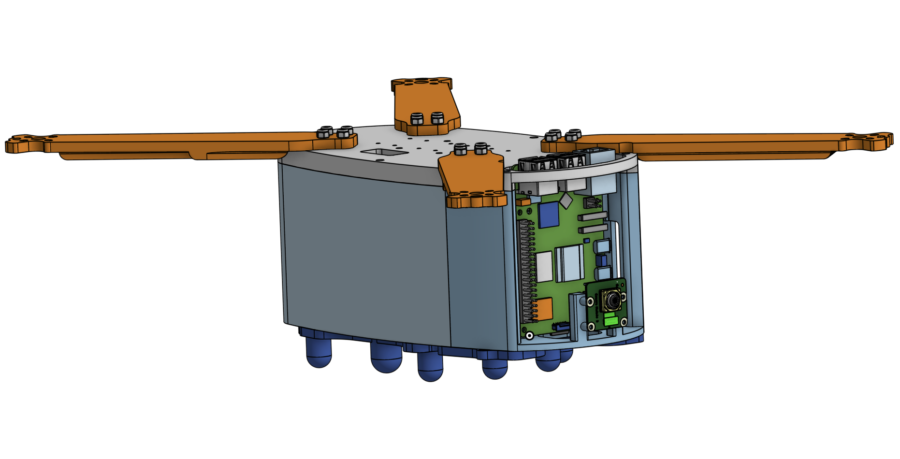

Capstone
For the majority of the year, I worked towards completing my capstone project: a fully custom-designed 3D printed drone with custom electronics and AI-powered object classification, pose tracking, facial recognition, and more.
Navigation
- Quick Downloads
- Research
- Part Selection
- Chassis Design
- PCB Design
- Electronics Architecture
- Firmware
- Assembly
- Testing and Calibration
- Next Steps
Quick Downloads
Research
Although I did a lot of research on parts selection, the overall idea for the AI-powered drone was entirely my idea. I wanted to create a drone that had the following qualities:
- Hardware
- Long battery life
- Record video in at least 1080p
- Have high processing power for AI-powered tasks
- Custom design as much as possible
- Software
- Run AI/Computer Vision models locally
- Run ArduPilot
- Have autonomous functions powered by GPS, sensors, as well as the camera + AI post-processing capabilities
So, I did a lot of research online using both forums and AI chatbots to help narrow down a list of parts (specific parts are discussed under part selection heading).
Once I had a general idea of what to do and what parts to use, I completed a Design Specification Considerations worksheet provided by Mr. Dubick.
Part Selection
The first step of making the drone was to figure out what parts I wanted to use. I had to consider many questions, such as: - What purpose will the drone be made for (racing, cinematography, autonomous missions, etc.)? - How big will the drone be? - What firmware will it use (ArduPilot, Betaflight, etc.)?
After considering many factors, I decided that I wanted to prioritize having a long flight time and powerful computers for autonomous missions. Those two choices meant that I would have to use a very large battery (meaning I would need a large drone to match), and that I need to use ArduPilot due to its support for GPS as well as a companion computer (more on this under the firmware section).
I did some more research on drones, and I knew I wanted to build a drone with 7" propellers (I ended up changing to 9"), since it would allow me to support a chassis large enough to house advanced electronics and a very large battery. For that size, I saw that 6S (6 cell) LiPo batteries were most popular in the community due to their high voltage (up to 25.2V) which allows for the drone to be more efficient. I settled on the Ovonic 4500 mAh 6S LiPo 100C XT90 Battery, since it had a very large capacity (99.9 wh!), a very high discharge rate, a bulky XT90 connector to allow for high power draw, and it was 6S.
After choosing the battery, I had to choose the motors, ESC, and electronic components. Since I chose a high-voltage battery, I went with relatively low 1050KV motors made by BrotherHobby. I saw good reviews about these online and they are made of high quality materials, which is why I chose them. The ESC is also made by BrotherHobby. It's a 4 in 1 ESC with support up to a 6S battery and can provide 65A per motor. I chose it since it had good reviews and was by far the cheapest ESC from a legitimate brand that could provide 65A per motor.
For the electronic components, I needed to ensure that they could support ArduPilot, and that I chose a comprehensive suite of sensors to allow for autonomous flight. For the MCU, I chose the STM32F767ZIT6 since it is powerful and has ample I/O for all of the sensors. For the sensors, I chose the ICM 29048 (IMU), LIS2MDL (magnetometer), LPS22HB (barometer), and NEO-M9N (GPS). I found boards from Adafruit at competitive prices that featured the sensors, power management systems (capacitors, step downs, resistors, etc.), along with a STEMMA QT connector for easy I2C connectivity. Insted of soldering the extremely tiny sensors directly to the board, I decided to go with these Adafruit boards to reduce complexity and increase reliability. The NEO M9N is large enough where I can solder it myself, so I bought the bare chip and added the power management system for the NEO M9N directly to the board (more on this under the Electronics Architecture section).
Additionally, I wanted a separate computer to drive the video recording and AI aspect. From the start, I knew that I wanted to use a Raspberry Pi 5 with the Raspberry Pi AI Hat+, capable of 26 TOPS. This combination allows for very powerful edge AI capabilities with high power efficiency, meaning that the drone can do real-time AI calculations in the air without drawing too much power.
After all this consideration, I ended up with a very high end parts list that would create a drone with very powerful capabilities. The next step was to design the chassis.
Bill of Materials
Major Components
All parts are linked with websites to purchase them.
| Part | Cost (USD) | Purpose |
|---|---|---|
| IMU (ICM20948) | $14.95 | Measures acceleration, rotation, and direction |
| Magnetometer (LIS2MDL) | $7.95 | Provides heading and magnetic field data for orientation and navigation |
| Barometer (LPS22HB) | $6.95 | Measures atmospheric pressure for altitude estimation |
| RC Receiver (Radiomaster RPI V1) | $18.99 | Receives pilot control inputs from the radio transmitter |
| ESC (BrotherHobby Returner 65A 4-in-1) | $45.00 | Controls motor speed and distributes power to all four motors |
| Brotherhobby Special Edition 1050KV 32.5-12 Motors (4) | $33.99 • 4 | Generate thrust and control the drone’s movement |
| XT90 Splitter | $9.99 | Allows XT90 power output from battery to go to both the ESC and Flight Controller Board |
| XT90 Connectors | $11.99 | Allows for a standard connector to provide power to the Flight Controller and ESC |
| Raspberry Pi 5 8GB (my project uses a 4GB model, but 8GB is ideal. I just had the 4GB lying around so I used it.) | $95.00 | Powerful computer that facilitates video streaming and allows for the NPU to analyze the video feed |
| Raspberry Pi AI Hat+ (26 TOPS) | $180.99 | Expansion board for Raspberry Pi that houses a very powerful NPU (processor dedicated for AI) |
| Raspberry Pi Camera Module 3 Wide Angle | $46.55 | Camera for the drone. The Wide Angle is ideal, but pretty much any version will work |
| 3 pin JST-SH to DuPont Cable | $3.99 | Cable that enables communication between flight controller and Raspberry Pi through the UART port on the Pi |
Total: $578.31
Note: specific propellers have not been chosen yet, so I have not included them here. I will update the pricing and parts list when I choose them.
Electronic Components
All electronic components are available on DigiKey except the bare PCB, which was ordered from JLCPCB. A PDF with specific part numbers is available under the Quick Downloads header.
| Part | Cost (USD) | Purpose |
|---|---|---|
| Bare PCB (5) | $34.61 | Blank PCB to which all the components listed below are soldered to to create the computer |
| STM32F767ZIT6 MCU | 21.32 | Main flight-controller microcontroller running ArduPilot |
| u-blox NEO-M9N GNSS Module | 27.00 | High-precision GPS/GNSS positioning |
| RF Ceramic Antenna (Taoglas AGGBP.25B) | 19.58 | GNSS signal reception |
| U.FL SMT RF Connector | 1.13 | RF connection between GNSS module and antenna |
| 12.000 MHz Crystal (ECS) | 0.54 | External clock source for MCU |
| USB-C Receptacle (GCT USB4105) | 0.78 | USB interface for data and power |
| USB-C Receptacle (Amphenol) | 0.44 | Alternate USB-C connector footprint |
| JST 8-pin 1.0 mm Header | 0.78 | Board-to-wire connector for peripherals |
| Tactile Switches (10× Alps) | 1.79 | User input / reset / boot selection |
| Slide Power Switch | 1.70 | Main power control |
| P-Channel MOSFET (IRF4905) | 2.89 | Reverse-polarity and power-path protection |
| TVS Diode 33 V (5KP33CA) | 1.73 | Transient suppression on main power rail |
| TVS Diode 6 V (SMAJ6.0A) | 0.16 | Protection on regulated voltage rails |
| TVS Diode 5 V (SMAJ5.0A) | 0.27 | USB / logic rail protection |
| ESD Diodes 3.3 V (2×) | 0.30 | ESD protection for IO lines |
| Aluminum Electrolytic Capacitor 100 µF | 0.61 | Bulk decoupling for power stability |
| Ceramic Capacitors 0.1 µF (50×) | 0.28 | Local decoupling for IC power pins |
| Ceramic Capacitors 10 µF (10×) | 0.70 | Power rail bulk decoupling |
| Ceramic Capacitors 27 pF (10×) | 0.34 | Crystal load capacitors |
| Blue LED 5 mm | 0.24 | Status indication |
| Resistors 100 Ω (10×) | 0.34 | PWM / signal line damping |
| Resistors 4.7 kΩ (10×) | 0.30 | Pull-ups / pull-downs |
| Resistors 5.1 kΩ (3×) | 0.30 | USB-C configuration resistors |
| Resistors 1 kΩ (10×) | 0.27 | Current limiting / logic use |
| Resistor 1.5 kΩ | 0.10 | LED current limiting |
| Resistors 10 kΩ 1 W (10×) | 0.77 | Power sensing / voltage dividers |
| Resistor 68 kΩ 2 W | 0.50 | High-side voltage measurement |
Total: $132.88
Grand Total (not including tariffs/shipping that may apply): $711.19
Note: specific propellers have not been chosen yet, so I have not included them here. I will update the pricing and parts list when I choose them.
Chassis Design
The first component I designed was the chassis. Originally, I wanted to use the Source One, an open source drone chassis supporting up to 7" props. However, in its standard form, it had nowhere near enough space to fit my large battery, a Raspberry Pi 5, a camera, and all of the components for the flight controller (the board was not designed at this point). So, I downloaded the STEP files into Onshape and made significant changes to allow for the battery to fit.


However, after printing it out, I realized that the drone is far too heavy and that the chassis is too complicated with too many parts. Additionally, I realized that for the weight of the components, I would need bigger propellers. I looked at the website for the motors, and it said that they support up to 9" propellers, so I decided to switch. Although I could have continued to modify the Source One chassis, I decided to start fresh with a clean sheet design. I wanted to keep the design as simple as possible and to make sure that it would support the larger propellers.
I started designing the new chassis by drawing a teardrop-esque shape, as a teardrop is the most aerodynamically efficient shape in nature. Learning from the flaws of the original chassis design, I knew that I wanted the new chassis to have as little parts as possible. For that reason, I made the chassis out of 4 components (pictured below):
- Main Body: the main body is composed of 2 parts. The earlier revisions of this new design had the main body as one solid piece, but I later split it into two pieces since I often reprinted the whole part just to make slight modifications to the front. Splitting the part allowed for less wastage.
- Main Body:
- Top Plate:
- Bottom Plate/Feet:
- All Together:
- 
- Main Body:


PCB Design
I designed the PCB alongside the original chassis in order to make the design as optimized as possible for the constraints of the chassis (shape, size, volume, mass, mounting points, etc.).
Electronics Architecture
The drone features two distinct electronic subsystems:
- Flight Controller + Sensor Boards + ESC: contains the microcontroller (STM32F7), GPS, sensors, motor controllers, and supporting circuitry to run ArduPilot, powering basic flight functionality and advanced missions powered by GPS. However, it does not run a full operating system like the Pi and cannot run edge AI or analyze camera feed.
- Raspberry Pi + NPU + Camera: contains a far faster computer (quad-core CPU @ 2.4 GHZ + 4GB LPDDR4X RAM @ 4267 MT/S + 64GB MicroSD), a very powerful 26 Tera Operations per Second (TOPS) NPU, and a 1080p camera for live video streaming and AI-powered post-procession to enable advanced functions such as object detection, pose tracking, facial recognition, depth estimation, and more.
These two subsystems cover a wide bandwidth of operations. By having two distinct systems, the flight controller can focus solely on flight and reading data from sensors while the Raspberry Pi can focus on analyzing data and giving instructions to the flight controller.
Tools Used:
To make this project, the main tool that I used was a 3D printer. Specifically, I mainly used a Bambu Lab A1 and X1 Carbon. I used a Prusa Mini+ and Bambu Lab A1 Mini for smaller parts, but the major components don't fit on the 180mm • 180mm bed. Additionally, I used a laser cutter to try and make a stencil, but it did not work out well. To put the drone together, I will use some M4 and M3 screws to hold the drone together, and I screwed them in using a screwdriver and allen wrenches.
Firmware
TBD
Assembly
Assembly is still in progress. So far, I have used the following tools in the Fab Lab:
- 3D Printers (Bambu Lab A1 Mini and A1, and Prusa Mini+)
- Screwdrivers and Allen Wrenches
- Screws (M3 and M4)
- Soldering Iron, Reflow Station, Solder, Solder Paste, and Flux
Testing and Calibration
TBD
Next Steps
At this moment, I need to do the following:
- Finish soldering the electronics
- Reprint the bottom plate with an updated design
- Upload ArduPilot to the completed flight controller board
- Install propellers
- Write code for the Raspberry Pi to work with the flight controller and provide it instructions based on the camera feed
While I have come a long way, I still have a lot of work cut out for me, especially with the software. Making the two electronic subsystems communicate with each other will be very challenging.